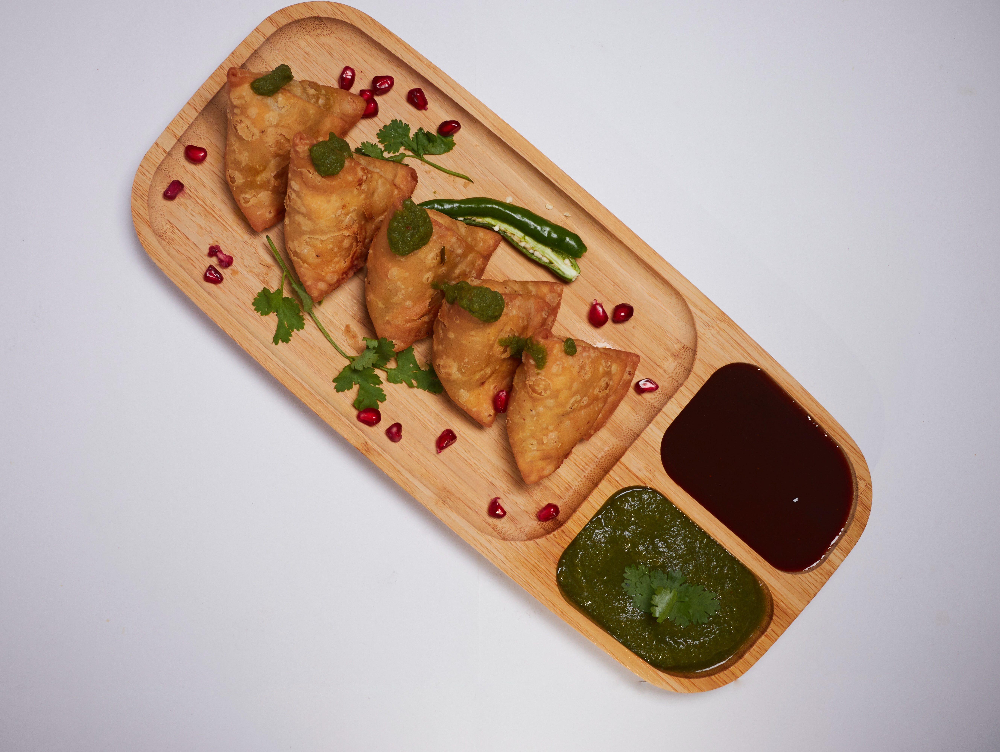

Recipes
Samosa
Go BackSamosas are a popular Indian snack. They are made with a crispy outer covering of flour dough and a savory filling of boiled potatoes, peas, onions, and a blend of aromatic spices.
Ingredients
- Potatoes: Boiled and diced
- Peas: Cooked and drained
- Onion: Finely chopped
- Spices: Garam masala, cumin, coriander, turmeric, and red chili powder
- Flour: All-purpose or wheat flour
- Salt: To taste
- Oil: For frying
Instructions
- Prepare the filling by sautéing onions, potatoes, peas, and spices.
- Make the dough by mixing flour, salt, and oil, then knead with water.
- Divide the dough into small balls and roll each into a thin circle.
- Cut the circle in half and fold into a cone shape.
- Fill the cone with the prepared filling and seal the edges.
- Deep fry the samosas until golden brown and crispy.
- Remove from oil and drain excess oil on a paper towel.
- Serve hot with chutney or sauce.
made with love